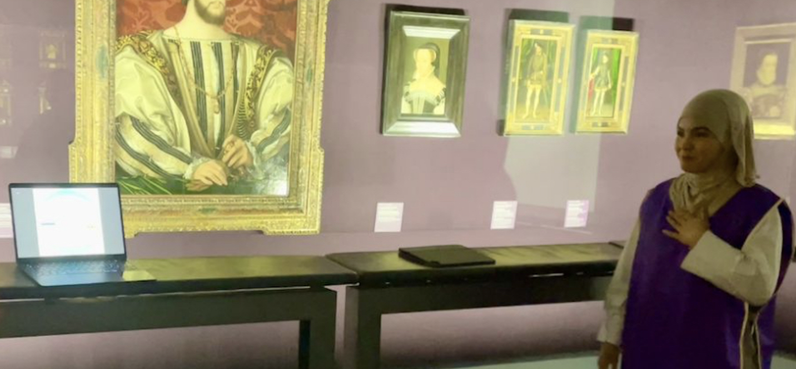
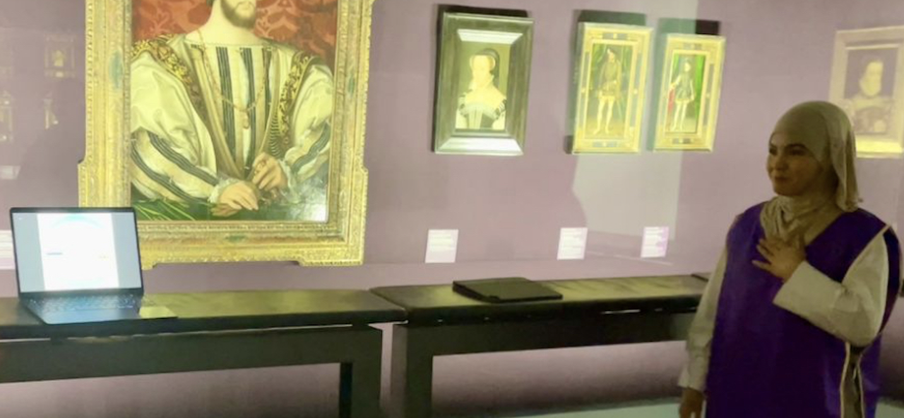

Le monde fascinant du Prompt Art au cœur du prestigieux musée du Louvre.
Dans le cadre d'un projet universitaire, j'ai eu l'occasion de partager une présentation sur le Prompt Art au musée du Louvre, un défi stimulant qui exigeait une présentation captivante dans le cabinet des portraits de la Renaissance. Mon but était de captiver un public diversifié, incluant des adolescents, des adultes, des personnes âgées et même des anglophones.
Le défi principal était de maintenir l'attention du public pendant 5 minutes, dans un contexte où l'engagement avec mon public était ma priorité. Pour cela, j'ai soigneusement préparé ma présentation pour captiver l'audience dès le début et m'adapter à un panel diversifié.
 
